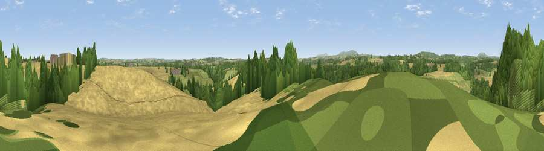

Viewpoint near Astley Abbotts
#25995 in England · top 60% of its area beats it · near Astley AbbottsThe view, rendered

A 360° render of this exact spot computed from the terrain model, tree cover and land cover — summer colours, afternoon light, calibrated against photographs of famous viewpoints. Real trees, hedges and buildings will differ in detail.
The panorama
Grey silhouette: terrain skyline in each direction (720 bearings, Earth curvature and refraction included). Dashed green: skyline with trees (+15 m) and buildings (+8 m) as obstacles. Blue strip: how far the ground is visible on each bearing.
Where the view opens
Wedge length = distance to the farthest visible ground on that bearing (vegetation-aware). Rings at 10, 25 and 50 km.
What fills the view
48% woodland · 35% cropland · 16% grassland ·
Angular shares of the visible panorama (visual magnitude), not map area. Landscape diversity 0.46 (0–1 Shannon).
Key numbers
More beautiful places nearby
The staircase of upgrades: each row has a higher view potential than everything closer. Driving times are estimates from straight-line distance, calibrated against real road routing — check an actual route before setting out.
| Place | Direction | Drive | Score |
|---|---|---|---|
| Viewpoint near Astley Abbotts | NNW · 1 km | ~2 min | 60.5 |
| Apley Terrace | NNW · 1 km | ~4 min | 65.1 |
| Viewpoint near Much Wenlock | WNW · 10 km | ~19 min | 69.2 |
| Viewpoint near Homer | WNW · 12 km | ~22 min | 71.9 |
| Viewpoint near Homer | WNW · 12 km | ~23 min | 74.5 |
| Viewpoint near Harley | WNW · 13 km | ~24 min | 79.9 |
| The Wrekin | NW · 15 km | ~27 min | 85.0 |
| Viewpoint near Little Wenlock | NW · 15 km | ~27 min | 86.6 |
52.56722, -2.40162 · source: screening · position refined by local search. Computed location — check access rights before visiting.